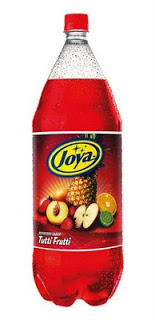

Joya
Entre nuestros sabores se encuentra la tan deseada Joya, producto importado de Madagascar con unos
sabores que te dejaran helado...¿Y que mejor para el verano? ¡Prueba ya nuestro nuevo sabor tuttifrutti
y quedate helado!
- Fabricante: Tulipan King S.L.
- Lugar de fabricacion: Madagascar
- Formatos de venta: Botellas de cristal de 1.5L
- Disponibilidad: Fuera de stock
- Ingredientes:
- Agua
- Azucar
- Extracto de naranja paquistani
- Lima de poniente
- Puede contener trazas de berenjena, sandia u otras frutas
